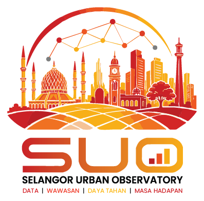

Hab Data Bandar
- Geodatabase Enterprise
- Gudang Data
- Metadata
- API & Data Terbuka
- Tadbir Urus Data

SELANGOR URBAN OBSERVATORYPLATFORM KECERDASAN BANDARPlatform pengurusan data bandar bersepadu dan pusat analitik negeri yang menghimpunkan data bandar, IoT dan data raya untuk memperkukuh pemantauan, perancangan dasar serta pembuatan keputusan berasaskan bukti.
SUO menghubungkan data, analitik, aplikasi digital dan kerjasama antara agensi dalam satu ekosistem bagi memperkukuh perancangan bandar, pemantauan pembangunan dan penyampaian maklumat spatial Negeri Selangor.
Platform geospatial interaktif SUO yang mengintegrasikan data perancangan, kemudahan, pengangkutan, risiko dan lapisan kecerdasan dalam satu persekitaran 2D/3D.
Mengubah data bandar kepada kecerdasan yang boleh ditindak bagi menyokong keputusan perancangan yang lebih baik.
Maklumat dan kecerdasan spatial berkaitan perumahan Negeri Selangor.
Buka → PerindustrianTaburan industri dan kawasan perindustrian.
Buka → KesihatanTaburan dan capaian kemudahan kesihatan.
Buka → Tanah LapangMaklumat dan taburan tanah lapang awam Negeri Selangor.
Buka → PerkuburanInventori spatial dan taburan tapak perkuburan Negeri Selangor.
Buka → KeselamatanPDRM, JBPM dan APM dengan analisis liputan serta kemudahan terdekat.
Buka → GeoparkWarisan geologi, geoheritage dan maklumat spatial Geopark Gombak-Hulu Langat.
Buka → Guna TanahPemantauan guna tanah dan maklumat perancangan Negeri Selangor.
Buka → DesaPaparan maklumat pembangunan desa melalui ekosistem SISMAPS.
Buka → StoryMapRancangan Struktur Negeri Selangor 2035 dalam pengalaman StoryMap.
Buka → StoryMapPanduan pelaksanaan dan maklumat pelancongan Negeri Selangor.
Buka →Menghubungkan pelbagai sistem perbandaran merentas daerah dan PBT untuk perancangan yang lebih terangkum dan responsif.
Terokai taburan dan maklumat perumahan melalui aplikasi tematik SUO.
Perspektif spatial terpilih untuk menyokong perbincangan dan keputusan perancangan yang lebih baik.
Terokai taburan spatial dan tahap kebolehcapaian kemudahan kesihatan di seluruh Selangor.
Fahami corak pembangunan dan bekalan perumahan mengikut daerah.
Analisis kawasan perindustrian dan koridor ekonomi yang sedang berkembang.
Terokai aplikasi SUO, data dan maklumat perancangan bandar melalui pembantu pintar.
SISMAPS, SMARTDesa dan StoryMaps ialah sistem luaran yang diurus oleh pemilik masing-masing; ketersediaannya bergantung pada sistem sumber. Status di atas hanya menggunakan metadata repo/Pages yang boleh disahkan.